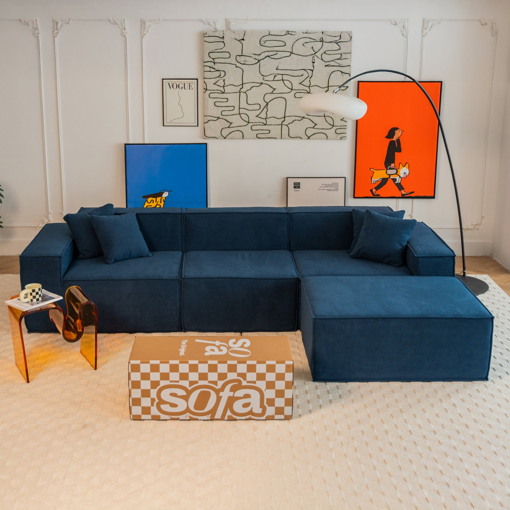
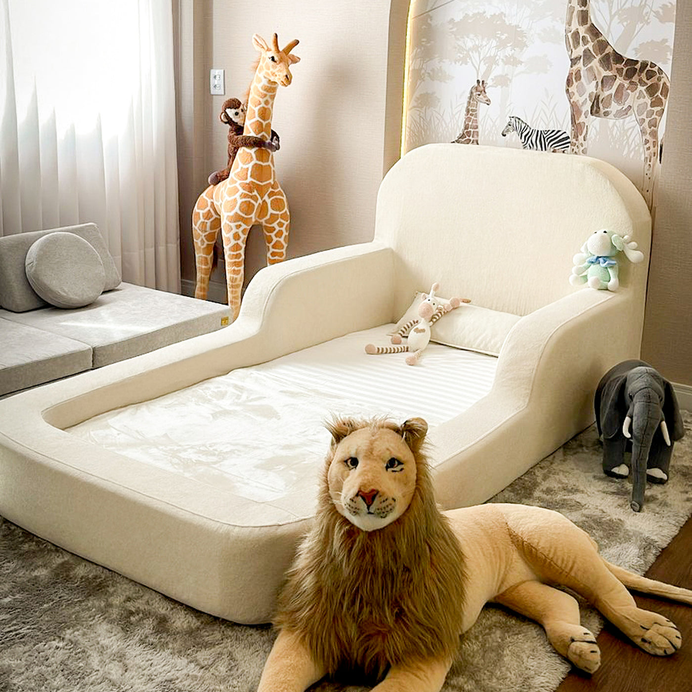
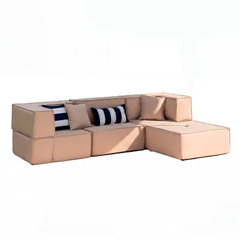

01 — ESTAR & CONVIVER
Sofá na Caixa.
Sofás modulares, sofás-cama e poltronas que acompanham diferentes ambientes e formas de morar. Conforto e versatilidade para compor a sua sala.
Conheça a Sofá na CaixaUM GRUPO. DIFERENTES POSSIBILIDADES.
Reunimos marcas que fazem parte do morar, do brincar e dos momentos ao ar livre.
Conheça nossas marcas
01 / A AQUILA
A Aquila Indústria Moveleira reúne Sofá na Caixa, Little Duck e Eco Flame Garden em um portfólio dedicado a diferentes ambientes e momentos da vida.
Da sala de estar ao universo infantil, do jardim à área de lazer, cada marca tem sua própria identidade e uma proposta de mobiliário para tornar esses espaços mais acolhedores.
02 / NOSSAS MARCAS
Conheça as marcas
que fazem parte da Aquila.
01 — ESTAR & CONVIVER
Sofás modulares, sofás-cama e poltronas que acompanham diferentes ambientes e formas de morar. Conforto e versatilidade para compor a sua sala.
Conheça a Sofá na Caixa
02 — CRESCER & BRINCAR
Um universo de móveis infantis para descansar, explorar e brincar. Camas montessorianas, sofás de brincar e peças que ajudam a criar espaços dedicados à infância.
Conheça a Little Duck
03 — RELAXAR & APROVEITAR
Mobiliário para viver o lado de fora. Sofás, puffs, espreguiçadeiras e lareiras para compor jardins, varandas e espaços de lazer com conforto e personalidade.
Conheça a Eco Flame Garden03 / INSTITUCIONAL
Para produtos, pedidos e atendimento,
acesse o site da marca correspondente.